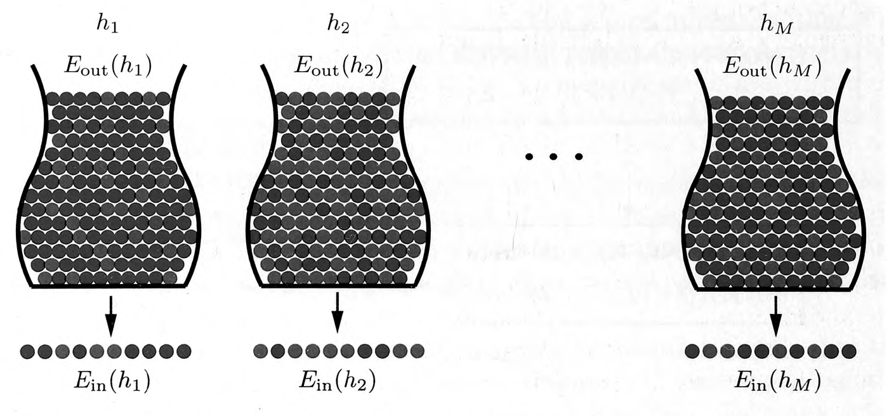

layout: true <div class="my-header"> <p class="align_left"><img src="images/yonsei_logo.png" style="height: 30px;"/></p> <p class="align_right"><b>Chapter 1 - The Learning Problem (Part 2)</b></p> </div> <div class="my-footer"> <p class="align_right"><b>2022.01.16 @ SYTEARK</b></p> <p class="align_left"><b>Tae Geun Kim</b></p> </div> --- class: center, middle # The Learning Problem <h4 style="color:brown">Part 2 of Chapter 1</h4> <h3 style="color: darkblue">Tae Geun Kim</h3> --- ## Table of Contents -- * Probability to the Rescue -- * Feasibility of Learning -- * <s>Error measures</s> -- * <s>Noisy Targets</s> --- class: center, middle # Probability to the Rescue --- ### Revisit the bin model .center[ <div id="boxshadow" style="width:80%;margin:0 auto;"> <img src="../../../week01/tgkim/images/bin.png" alt="bin" style="width:100%"> <figcaption style="text-align:center";><b>Fig.1</b> Revisit the bin</figcaption> </div> ] -- **Q. How to estimate $\mu$ with $\nu$?** --- ### Hoeffding Inequality To quantify the relationship between $\nu$ and $\mu$, there is a simple bound called *Hoeffding Inequality*. $$ \mathbb{P}[|\nu - \mu| > \epsilon] < 2e^{-2\epsilon^2 N} \quad \text{for any}~\epsilon > 0 $$ -- * $\nu$ is random, but $\mu$ is not random. -- * The sample size $N$ grows, it becomes exponentially unlikely that $\nu$ will deviate from $\mu$ by more than our *tolerance* $\epsilon$. -- * Although $\mathbb{P}[|\nu-\mu| < \epsilon]$ depends on $\mu$, we are able to bound the probability by $2e^{-2\epsilon^2 N}$ which does not depend on $\mu$. -- * Only the sample size $N$ affects the bound, not the size of the bin. --- ### Hoeffding Inequality .center[ <div class="animated-border-quote" style="width:100%"> <blockquote style="width:90%"> <p><b>Exercise 1.9</b></p> <p style="text-align:left"> If $\mu=0.9$, use the Hoeffding Inequality to bound the probability that a sample of 10 marbles will have $\nu \leq 0.1$ and compare the answer to the <i>Exercise 1.8</i>. </p> </blockquote> </div> ] -- $$ \begin{aligned} \mathbb{P}(\nu \leq 0.1) &= \mathbf{P}(0.9-\nu \geq 0.8)\\\\ &= \mathbf{P}(|\nu - 0.9| \geq 0.8) \\\\ &\leq 2e^{-2\cdot 0.8^2 \cdot 10 } \simeq 5.5215 \times 10^{-6} \end{aligned} $$ -- This bound is compatible with *Exercise 1.8*. $$ \mathbb{P}(\nu \leq 0.1) = 9.1 \times 10^{-9} $$ --- ### Confidence Interval We can use Hoeffding inequality to determine how many samples are needed to set confidence intervals. -- $$ \begin{aligned} &\mathbb{P}(|\nu - \mu| \geq \epsilon) \leq 2e^{-2\epsilon^2 N} \\\\ \Rightarrow~&\mathbb{P}(\nu \notin [\mu - \epsilon, \mu + \epsilon]) \leq 2e^{-2\epsilon^2 N} \end{aligned} $$ -- Let denote the level of significance as $\alpha$ then: $$ \alpha = \mathbb{P}(\nu \notin [\mu - \epsilon, \mu + \epsilon]) \leq 2e^{-2\epsilon^2 N} \\\\ $$ -- Solve for $N$: $$ N \geq \frac{\log 2/\alpha}{2\epsilon^2} $$ --- ### In-and-out **Q. How does the bin model relate to the learning problem?** -- * Take any single hypothesis $h\in\mathcal{H}$ and compare it to $f$ on each point $\mathbf{x} \in \mathcal{X}$. -- * If $h(\mathbf{x}) = f(\mathbf{x})$, color the point $\mathbf{x}$ green. * If $h(\mathbf{x}) \neq f(\mathbf{x})$, color the point $\mathbf{x}$ red. -- * The color that each point gets is not known to us, since $f$ is unknown. -- * However, if we pick $\mathbf{x}$ at random according to some probability distribution $\mathbf{P}$ over the input space $\mathcal{X}$, we know that $\mathbf{x}$ will red with some probability, call it $\mu$, and green with probability $1-\mu$. -- * Hmm.. --- ### Error Counting Estimate the error probability can be denoted as follows: $$ L = \mathbf{P}\left\\{ h(X) \neq Y \right\\} $$ * $g$ is a hypothesis. * It is important to find error estimation methods that work well without any condition on the distribution of $(X, Y)$. -- Suppose that a testing sequence $$ T\_N = \left\\{ (X\_{i},\,Y\_i)\right\\}\_{i=1}^N $$ which is a sequence of i.i.d (independent and identically distributed) pairs that are independent of $(X,\,Y)$ and *the bin*, and that are distributed as $(X,\,Y)$. --- ### Error Counting An obvious way to estimate $L$ is to count the number of errors that $h$ commits on $T_N$. -- * The *error-counting estimator* $\hat{L}_{N}$ is defined by the relative frequency $$ \hat{L}\_N = \frac{1}{N} \sum\_{j=1}^N \mathbf{I}\_{\\{h(X\_{j})\neq Y\_{j}\\}} $$ -- * The estimator clearly *unbiased* in the sense that $$ \mathbf{E}\hat{L}\_N = L $$ -- * The distribution of $\mathbf{I}\_{\\{h(X\_{j})\neq Y\_{j}\\}}$ is a bernoulli distribution. (0 or 1) * The distribution of $N \hat{L}_N$ is a binomial distribution with parameters $N$ and $L$. $$ N \hat{L}\_N \sim \text{Bin}(N, L) $$ --- ### Revisit Hoeffding Inequality .center[ <div class="animated-border-quote" style="width:100%"> <blockquote style="width:90%"> <p><b>Theorem</b> (Hoeffding (1963))</p> <p style="text-align:left">Let $X_1,\,\cdots,\,X_n$ be independent bounded random variables such that $X_i$ falls in the interval $[a_i,\,b_i]$ with probability one. Denote their sum by $S_n = \sum_{i=1}^n X_i$. Then for any $\epsilon > 0$ we have </p> <p>$$\mathbf{P}\{S_n - \mathbf{E}S_n \geq \epsilon\} \leq e^{-2\epsilon^2 / \sum_{i=1}^n (b_i - a_i)^2}$$</p> <p style="text-align: left;">and</p> <p>$$\mathbf{P}\{S_n - \mathbf{E}S_n \leq -\epsilon\} \leq e^{-2\epsilon^2 / \sum_{i=1}^n (b_i - a_i)^2}$$</p> </blockquote> </div> ] --- ### Hoeffding Inequality for a binomial * Since $\mathbf{I}\_{\\{h(X\_{j})\neq Y\_{j}\\}}$ should be 0 or 1, we can consider it as $X\_j$ with $a\_j=0,\,b\_j=1$ for all $j$. -- * Since $N \hat{L}\_N$ is a summation of $\mathbf{I}\_{\\{h(X\_{j})\neq Y\_{j}\\}}$, it can be considered as $S\_N$. -- * Then we can write the Hoeffding inequality for this case as $$ \mathbf{P}\\{|N\hat{L}\_N - NL| \geq \epsilon N \\} \leq e^{-2(\epsilon N)^2 / \sum\_{i=1}^N (1)^2} $$ -- * Therefore, we can get $$ \therefore ~ \mathbf{P}\\{|\hat{L}\_N - L| > \epsilon \\} \leq e^{-2 \epsilon^2 N} $$ -- * And the variance of the estimate also can bounded. $$ \mathbf{E}(\hat{L}\_N - L)^2 = \frac{L(1-L)}{N} \leq \frac{1}{4N} $$ --- ### Get back to the book In *Learning from Data*, the notation is as follows: -- * **In-sample error** $$ \begin{aligned} E\_\text{in}(h) &= \text{(fraction of $\mathcal{D}$ where $f$ and $h$ disagree)} \\\\ &= \frac{1}{N} \sum\_{i=1}^N \mathbf{I}\_{[h(\mathbf{x}\_n) \neq f(\mathbf{x}\_n)]} \end{aligned} $$ -- * **Out-sample error** $$ E\_\text{out}(h) = \mathbb{P}[h(\mathbf{x}) \neq f(\mathbf{x})] $$ -- From previous discussions, the Hoeffding inequality can be rewritten as $$ \mathbb{P}[|E\_\text{in}(h) - E\_\text{out}(h)| > \epsilon] \leq e^{-2 \epsilon^2 N} $$ --- ### Hoeffding Inequality for $\mathcal{H}$ Now consider the Hoeffding inequality for an entire hypothesis. $$ \mathcal{H} = \left\\{h\_1,\, h\_2,\,\cdots,\,h\_M \right\\} $$ .center[ <div id="boxshadow" style="width:90%;margin:0 auto;">  <figcaption style="text-align:center";><b>Fig.2</b> Multiple bins depict the learning problem with $M$ hypotheses</figcaption> </div> ] --- ### Hoeffding Inequality for $\mathcal{H}$ **Very important assumption**: -- .center[ $h$ is fixed *before* you generate the data set. ] -- If you are allowed to change $h$ after you generate the data set, the final hypothesis $g$ is not fixed ahead of time before generating the data. -- Therefore, we **cannot** just plug in $g$ for $h$ in the Hoeffding inequality. --- ### Hoeffding Inequality for $\mathcal{H}$ .center[ <div class="animated-border-quote" style="width:100%"> <blockquote style="width:90%"> <p><b>Exercise 1.10</b> (Homework)</p> <p style="text-align:left"> Here is an experiment that illustrates the difference between a single bin and multiple bins. Run a computer simulation for flipping 1,000 fair coins. Flip each coin independently 10 times. Let's focus on 3 coins as follows: </p> <ul> <li>$c_1$ is the first coin flipped;</li> <li>$c_\text{rand}$ is a coin you choose at random;</li> <li> $c_\text{min}$ is the coin that had the minimum frequency of heads (pick the earlier one in case of a tie); </li> </ul> <p style="text-align:left"> Let $\nu_1,\,\nu_\text{rand}$ and $\nu_\text{min}$ be the fraction of heads you obtain for the respective three coins. For a coin, let $\mu$ be its probability of heads. </p> <p style="text-align:right">(Continue $\Rightarrow$)</p> </blockquote> </div> ] --- ### Hoeffding Inequality for $\mathcal{H}$ .center[ <div class="animated-border-quote" style="width:100%"> <blockquote style="width:90%"> <p><b>Exercise 1.10</b> (Continued)</p> <ol type='a'> <li>What is $\mu$ for the three coins selected?</li> <li> Repeat this entire experiment a large number of times (e.g. 100,000 runs of the entire experiment) to get several instances of $\nu_1, \nu_\text{rand}$ and $\nu_\text{min}$ and plot the histograms of the distributions of $\nu_1, \nu_\text{rand}$ and $\nu_\text{min}$. Notice that which coins end up being $c_\text{rand}$ and $c_\text{min}$ may differ from one run to another. </li> <li> Using b., plot estimates for $\mathbb{P}[|\nu-\mu| > \epsilon]$ as a function of $\epsilon$, together with the Hoeffding bound $2e^{-2\epsilon^2N}$ (on the same graph). </li> <li> Which coins obey the Hoeffding bound, and which ones do not? Explain why. </li> <li> Relate part d. to the multiple bins in Fig.2 </li> </ol> </blockquote> </div> ] --- ### Hoeffding Inequality for $\mathcal{H}$ Since $g$ has to be one of the $h\_m$'s regardless of the algorithm and the sample, it is always true that: $$ \begin{aligned} |E\_\text{in}(g) - E\_\text{out}(g)| \,\Longrightarrow\, &\qquad |E\_\text{in}(h\_1) - E\_\text{out}(h\_1)| > \epsilon \\\\ &\text{or}\quad|E\_\text{in}(h\_2) - E\_\text{out}(h\_2)| > \epsilon \\\\ &\cdots \\\\ &\text{or}\quad|E\_\text{in}(h\_M) - E\_\text{out}(h\_M)| > \epsilon \end{aligned} $$ -- And we know that below inequalities are true: -- * If $\mathcal{B}\_1 \,\Longrightarrow \mathcal{B}\_2$, then $\mathbb{P}[\mathcal{B}\_1] \leq \mathbb{P}[\mathcal{B}\_2]$ -- * $\mathbb{P}[\mathcal{B}\_1\,\text{or}\,\mathcal{B}\_2\,\text{or}\,\cdots\,\text{or}\,\mathcal{B}\_M] \leq \mathbb{P}[\mathcal{B}\_1] + \mathbb{P}[\mathcal{B}\_2] + \cdots + \mathbb{P}[\mathcal{B}\_M]$ -- Therefore, we can get the Hoeffding inequality for $\mathcal{H}$: $$ \therefore~\mathbb{P}[|E\_\text{in}(g) - E\_\text{out}(g)| > \epsilon] \leq 2 M e^{-2\epsilon^2 N} $$ --- class: center, middle # Feasibility of the Learning --- ### Feasibility of the Learning (Many things are omitted - read the book for more details) -- The feasibility of learning is split into two questions: .center[ <div class="animated-border-quote" style="width:100%"> <blockquote style="width:90%"> <ol> <li> Can we make sure that $E_\text{out}(g)$ is close enough to $E_\text{in}(g)$? </li> <li> Can we make $E_\text{in}(g)$ small enough? </li> </ol> </blockquote> </div> ] -- The Hoeffding inequality addresses the first question only. -- **Q. How can we answer the second question?** -- **A.** *Complexity* can be an answer. --- ### Complexity * The complexity of $\mathcal{H}$ -- * If the number of hypothesis $M$ goes up, we run more risk that $E\_\text{in}(g)$ will be a poor estimator of $E\_\text{out}(g)$ according to the Hoeffding inequality. -- * $M$ can be thought of as a measure of the *complexity* of the $\mathcal{H}$. -- * However, if we want an affirmative answer to the second question, we stand a better chance if $\mathcal{H}$ is more complex, since $g$ has to come from $\mathcal{H}$. -- * A more complex $\mathcal{H}$ gives us more flexibility in finding some $g$ that fits the data well, leading to small $E\_\text{in}(g)$. -- * This tradeoff in the complexity of $\mathcal{H}$ is a major theme in learning theory that we will study in detail in Chapter 2. --- ### Complexity * The complexity of $f$ -- * By the Hoeffding inequality, the complexity of $f$ does not affect how well $E\_\text{in}(g)$ approximates $E\_\text{out}(g)$. -- * But if the target function is complex, the data from a complex $f$ are harder to fit than the data from a simple $f$. -- * We might try to get around that by making our hypothesis set more complex so that we can fit the data better and a get lower $E\_\text{in}(g)$, but then $E\_\text{out}$ won't be as close to $E\_\text{in}$ per the Hoeffding inequality. --- ### References * [Learning From Data](http://amlbook.com/), Yaser S. Abu-Mostafa, Malik Magdon-Ismail, and Hsuan-Tien Lin, AMLbook.com (2012) * [A Probabilistic Theory of Pattern Recognition](https://link.springer.com/book/10.1007/978-1-4612-0711-5), Luc Devroye, László Györfi and Gábor Lugosi, Springer (1996) * Hoeffding, Wassily (1963). *Probability inequalities for sums of bounded random variables*, Journal of the American Statistical Association. 58 (301): 13–30. --- class: center, middle # Thank you!